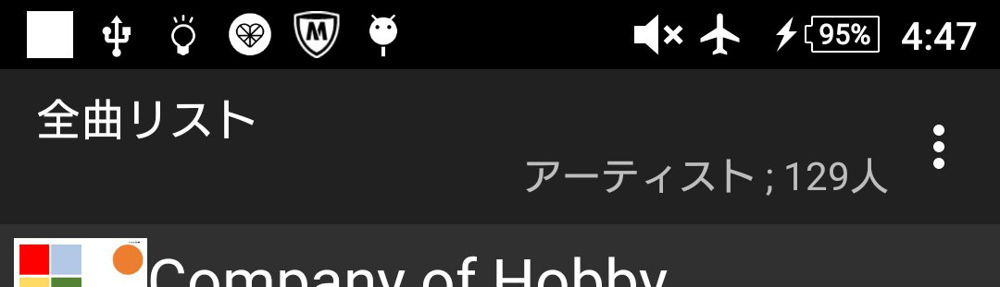
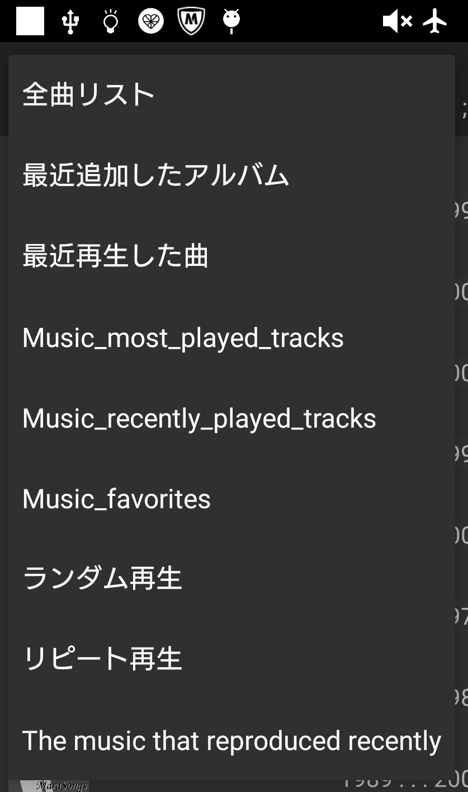

|
当たり前に使える音楽プレイヤー
MaraSongs |
リストの説明
プレイリストからの選曲リスト画面です
タイトルバー(Android5以降はToolBer) |
右端にメニューボタンが有ります。
|


各リストの説明
端末内にある音楽ファイルを以下の様に分類してリストアップします。
|
アーティスト |
||
最近のパソコン用ミュージックプレイヤーで"アルバムアーティスト"で表示される項目です。
|
||
アルバム |
||
選択されたアーティスト名で抽出したアルバムです。
|
||
タイトル |
||
選択されたアルバムの収録曲リストです。
|

各種プレイリスト |
|
|
最近追加したアルバム |
||
機能メニューの「最近追加リストの更新」を選ぶと、設定の「プレイリスト / 最近追加したアルバム」で指定した枚数で最近追加した曲を抽出します。
それ以下の時は階層化しないタイトルリストになります。 |

最近再生した曲 |
||
プレイヤー画面のメニューから呼び出す機能/最近再生した曲で生成されたリストです。
|

ランダム再生 |
||
プレイヤー画面のメニューから呼び出す機能/ランダム再生で生成されたリストです。
|

リピート再生 |
||
プレイヤー画面のメニューから呼び出す機能/リピート再生で生成されたリストです。
|

リストアイテムのロングタップで表示されるメニュー
アーティスト/アルバムリストの場合 |
| 表示されているリストをロングタップすると、その時点で使える機能のメニューが表示されます。 | ||
リストアップ編集
|
||

リクエスト |
||
|

プレイリストに追加選択した曲を既存のプレイリストに追加します。
|

新規プレイリストを作成して追加 |
||
選択した曲を1曲目に、新規のプレイリストを作成します。
|

このリストから削除 |
||
選択した曲を表示しているプレイリストから削除します。
|

上下移動 |
||
選択した曲を表示しているプレイリストの中で再生順を調整します。
|
ToolBarメニュー
| 古い端末ではボタンで表示するメニュー | |
機能メニューリスト画面用に作った機能を集めました。 |

シンプル表示に切替/
|
||
詳細表示の時はシンプル表示に、シンプル表示の時は詳細表示に切替ます。
|

最近追加リストの更新 |
||
前記しました最近追加リストの作成/更新操作です。
|

リスト名変更プレイリストの名称を変更します。
|

リストを削除不要なプレイリストを削除します。 |

表示されていないアーティスト
|

全曲リスト更新 |
||
|


その他 |
||
設定とヘルプ表示
|

修正リスト表示修正リストはリストアップ修正で指定した"どのアーティスト(アルバム)をどのアーティストとしてリストアップするか "を記録しているデータベースです。
|

キー割付け
| かなり古い端末での確認ですので最近の端末では同様に動作しないかもしれません | |
| 原則；４方向キーの上を押せば上のアイテム、下を押せば下のアイテムを選択します。 | |
リストの最終アイテムで４方向キーの下
|
|
ヘッドで４方向キーの上
|
|
バックキーの扱い
|